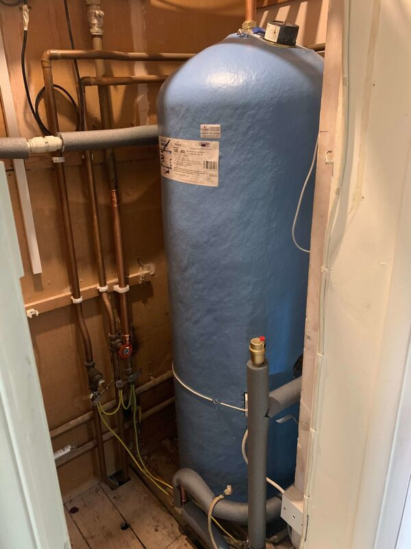

General plumbing
From replacing electric showers, taps, sinks and toilets to any other issue.
Over 30 years' experience, and no job too big or small. Based in South Dublin, Wicklow and North Wexford.

Emergency 24/7 support. Call 085 234 7259
From replacing electric showers, taps, sinks and toilets to any other issue.
From heating systems, cylinder replacement, pumps and radiators to emergencies and any other issue.
Darling Plumbing is a father-and-son business run by Andy and Brendan. We've been in the trade for over 30 years, working across South Dublin, Wicklow and North Wexford.
We cover all aspects of plumbing and heating, from a new tap to a full cylinder replacement, and no job is too big or small. If you have a problem, just give us a call on 085 234 7259.
Andy and Brendan are honest, reliable, professional and so friendly with a great eye for detail. I'm so delighted with the work they did for us today and will be getting them to do all our plumbing work in the future. I can't recommend them enough, they were an absolute pleasure to deal with, thank you so much.
They were fantastic. Gave them a call for a water leak issue with the tank and they came in the very next day. Sorted the issue out quickly. Great work and fair pricing for the work.
Great service, the lads were responsive and sorted out my leak in one visit.
Very happy with the service of father and son Darling plumbing business. Reliable, trustworthy and easy to discuss the work involved with. They had been recommended to me by a friend who also had work done by them and were happy with the whole experience too.
Really great service from both Andy and Brendan. They were able to replace a kitchen tap within 24 hours from the time I contacted them. Easy to work with and very good communication between us. Nice to have a reliable plumber in the area that I can rely on.
Would highly recommend Andy and Brendan, and cannot thank them enough! We had a pipe leak overnight. They came out as quickly as they could the morning I contacted them, and had the issue sorted within half an hour. Very professional and friendly service.
Absolutely amazing service. Lads fixed my oil burner issue in the matter of minutes. Super professional and nice to deal with. Highly recommended.
Open 24 hours, 7 days a week